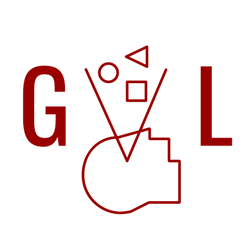
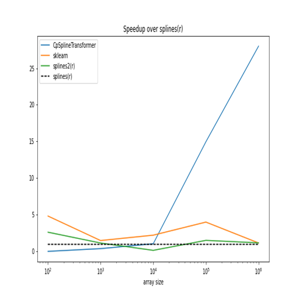
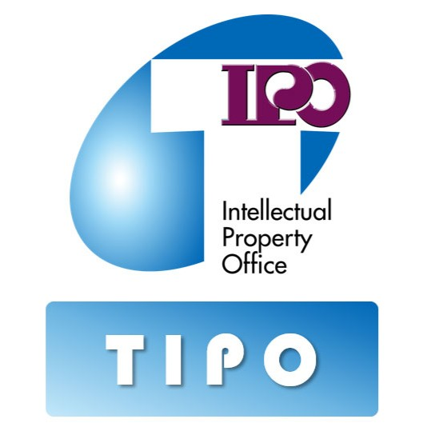

|
Ting-Hsuan Chen I am currently a master's student in Computer Science at the University of Southern California, advised by Professor Yue Wang. I have previously worked as an R&D engineer at Foxconn and also served as a research assistant in Professor Yu-Lun Liu's laboratory at National Yang Ming Chiao Tung University. Currently, I am working at Bosch as a Research Intern focusing on Scene Understanding and Generative AI. |

|
|
USC 
Bosch 
NYCU

GVL Lab |
News
|
||||||||||||||||||||||||||
ResearchI'm interested in computer vision, deep learning, generative AI, 3D reconstruction, autonomous agent, and robotics. |
|
|
Dino-Diffusion Modular Designs Bridge the Cross-Domain Gap in Autonomous Parking
Zixuan Wu, Hengyuan Zhang, Ting-Hsuan Chen, Yuliang Guo, David Paz, Xinyu Huang, Liu Ren, under review arXiv / code A modular parking pipeline combining DINOv2 visual foundation models with diffusion-based planning for robust zero-shot transfer across weather and lighting conditions. Achieves 90%+ success rate in cross-domain tests and shows promising sim-to-real transfer. |
|
|
MoonSim: A Photorealistic Lunar Environment Simulator
Ting-Hsuan Chen*, Henghui Bao*, Ziyu Chen*, Haozhe Lou, Ge Yang, Zhiwen Fan, Marco Pavone, Yue Wang, under review project page MoonSim is a photo-realistic lunar scene simulator that incorporates Unreal Engine for high-quality lunar images with realistic lighting and shadows and MuJoCo for physics simulation, supporting diverse locomotion and navigation tasks. |
|
|
NaRCan: Natural Refined Canonical Image with Integration of Diffusion Prior for Video Editing
Ting-Hsuan Chen, Jiewen Chan, Hau-Shiang Shiu, Shih Han Yen, Changhan Yeh, Yu-Lun Liu, NeurIPS, 2024 project page / arXiv / code / demo
|
|
|
DiffIR2VR-Zero: Zero-Shot Video Restoration with Diffusion-based Image Restoration Models
Changhan Yeh, Chin-Yang Lin, Zhixiang Wang, Chi-Wei Hsiao, Ting-Hsuan Chen, Yu-Lun Liu, arXiv, 2024 project page / arXiv / code / demo
|


Project |
|
|
DreamMesh
Ting-Hsuan Chen, Cameron Smith, Jiageng Mao, Daniel Wang, github, 2025 A Blender plugin that transforms text or image inputs into complete 3D scenes with rigged objects, realistic AI-generated backgrounds, and intelligent object placement, all powered by generative AI. |
|

|
GPU-SplineTransformer
Ting-Hsuan Chen github, 2022 My GPU-Optimized SplineTransformer significantly accelerates the conversion of large data arrays into B-spline bases by leveraging GPU power. This innovation outperforms traditional CPU-based solutions, offering enhanced speed and efficiency for your data processing needs. |
Patent |
|

|
Data Analysis Method, Apparatus, Electronic Device and Storage Medium
Ting-Hsuan Chen TW113141155, 2024 A data analysis method based on feature waveform analysis, improving the accuracy of feature waveform recognition through convolution and segmentation operations. This patent is currently in the confidential stage and is expected to be declassified in 2026. |
Professional Experience |
|
|
MS Student & Research Assistant
USC Geometry, Vision, and Learning Lab, Los Angeles, California, USA Aug 2024 - Present At USC's Geometry, Vision, and Learning Lab, I explore diffusion models as priors to improve 3D reconstruction quality and enable 3D scene editing. I also work on autonomous web agents and develop physics-based robotics simulators to bridge the sim-to-real gap. |
|
|
Scene Understanding/GenAI Research Intern
Bosch Center for Artificial Intelligence, Sunnyvale, California, USA May 2025 - Present Working on cutting-edge research in scene understanding and generative AI technologies. Collaborating with the research team to develop innovative solutions for computer vision applications. |
|
|
Research Assistant
NYCU Computational Photography Lab, Hsinchu, Taiwan Jan 2024 - June 2024 At the NYCU Computational Photography Lab, my primary research focused on diffusion models. During this period, I successfully published a paper as the first author, which was accepted at NeurIPS 2024. Additionally, I participated in industry-academia collaborations with Nvidia and MediaTek, applying research findings to real-world industry challenges. |
|
|
R&D Engineer
Foxconn, Hon Hai Precision Industry, Taipei, Taiwan July 2023 - Dec 2023 At Foxconn, I developed the company's first patented ECG waveform recognition system by integrating AI, computer vision, and signal processing techniques. I also mentored new interns and represented the company in various medical conferences. Previously, I built an AI-based data cleansing and classification system, along with essential APIs using Django for medical data processing. |
Awards & Recognitions |
|